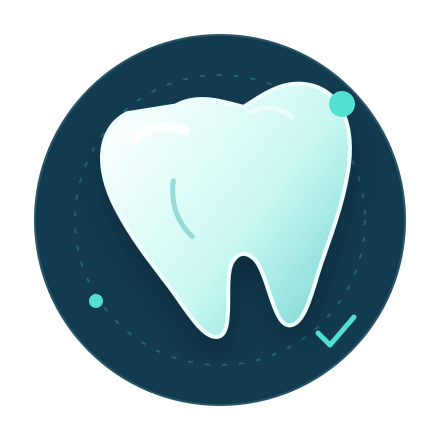

🦷
Oral health basics
Understand cavities, gum health, brushing, flossing and preventive dental visits.
Visual dental learning and evidence-informed oral health awareness—explained in simple language for students and the public.
Clear explanations. Responsible education. Better conversations about oral health.

Start with the basics, then explore how oral health connects to everyday life.
Understand cavities, gum health, brushing, flossing and preventive dental visits.
Use diagrams, 3D-style visuals and simple explanations to make complex concepts easier to grasp.
Revision-friendly concepts, clinical case discussions and learning prompts for dental students.
Learn about common dental concerns, prevention and when professional assessment matters.
Facial Reconstruction is a dental education brand focused on accessible explanations, visual learning and oral health awareness. The goal is to make reliable information easier to understand—not to replace professional care.
Follow the latest educational posts and videos.